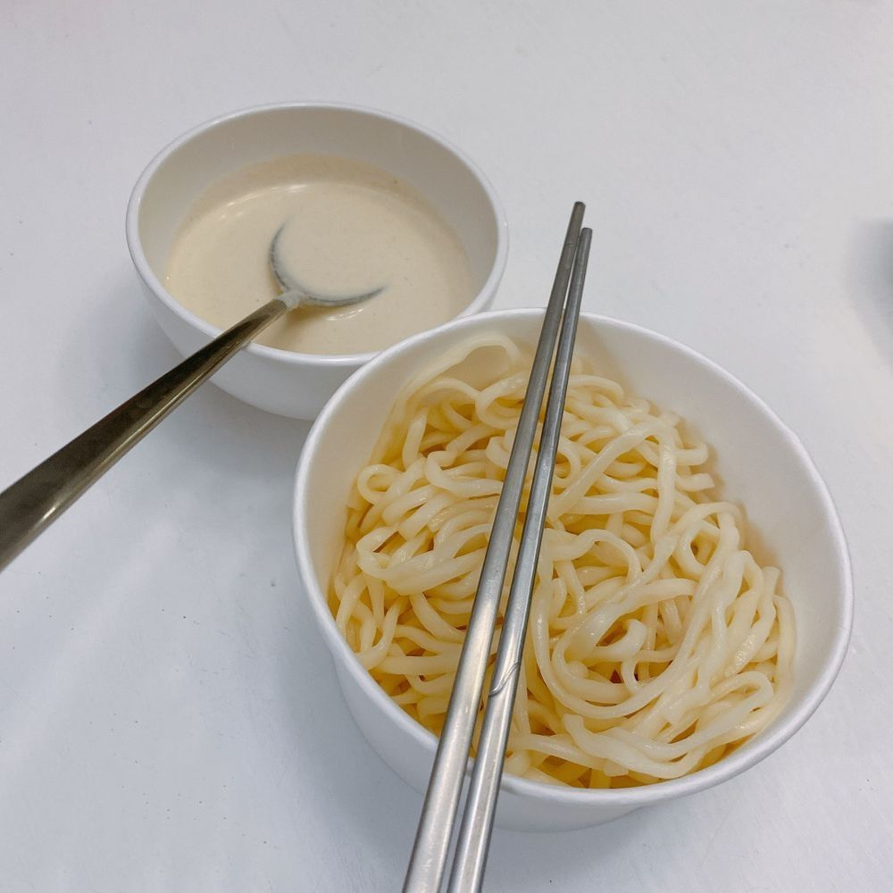

チェヨンとなことテレビ見ながらご飯食べてる😚
最近、ひーがお気に入りのコングクスをなこと食べてみたんだけど、私には早かったみたい😇笑笑
元々豆が苦手だから😭
なので、私はサンナクチ（たこの生きてるお刺身）と、ひらめの寿司食べたよ🥺💗
めちゃくちゃ食べたね🥺🥺🥺💗
デザートのアイスまでしっかり🍨笑笑
채연이란 나코 랑 티비 보면서 밥 먹었음 😚
최근 히 가 마음에 드는 콩국수 먹는데 나는 ...ㅎㅎㅎ😇
원래 콩이 안 좋아해서😭
그래서 나는 산낙지 과 광어 초밥 먹었어 🥺💗
많이 먹었어🥺🥺🥺💗
디저트 아이스크림까지 🍨~